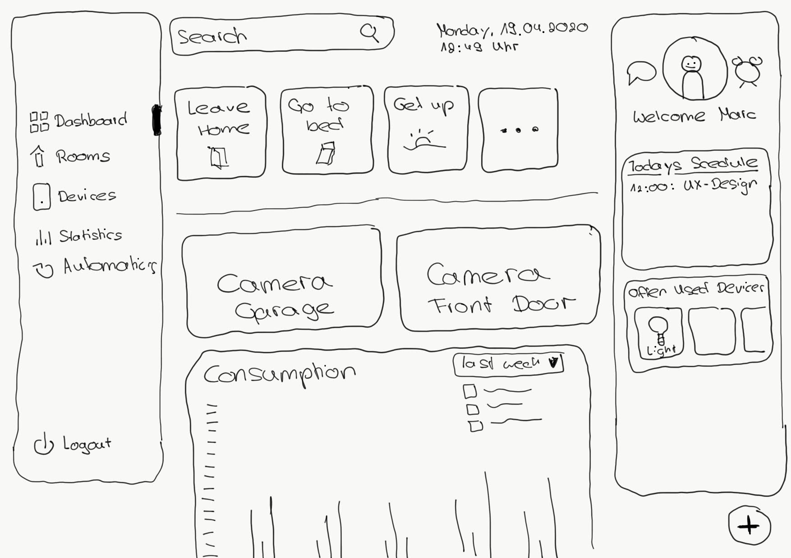

Marc Eberhard :: Interface Design :: OMB-5
Die Idee war es ein Dashboard zu erstellen, welches alle Daten auflistet und anzeigt die im Haushalt entstehen.
Um einen ersten Aufbau meines Dasboards zu visualisieren habe ich eine Skizze davon angefertigt. Wie man darauf erkennt, soll es auf der linken Seite einen Navigationsbereich geben.
Im oberen Bereich befindet sich eine Suche sowie das heutige Datum.
Auf der linken Seite, findet man nun seinen Persönlichen Bereich mit seinem Kalender, den am meisten genutzen Geräten im Haushalt und weitere persönliche Informationen.
In der Mitte befindet sich die eigentlichen Inhalte die individualisiert angeordnet und angezeigt werden können.
Der Mittlere Bereich soll später scrollbar sein, wohingegen der Linke und Rechte Bereich nachher "sticky" sein sollten.
Nachdem ich meinen Ersten Entwurf hatte, habe ich meine Skizzen mit dem Prototyping-Tool axure digitaliert. Um immernoch in einem niedrigen Reifegrad zu bleiben habe ich den Low-Fidelity-Mode von axure benutzt und mich auf einfache Icons und die Anordung der "Widgets" beschränkt
Den aktuellen Stand meines Dashboard findet man hier!